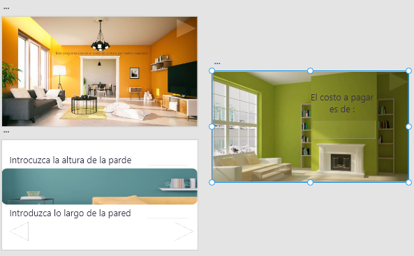

En esta sección te mostraré algunos ejemplos hechos en adobe xD
1.1 prototipo para calcular el area de un triangulo
1.1 prototipo para calcular el area de un triangulo
1.2 prototipo para la conversion de dolares
1.3 Prototipo para calcular el costo de agua.
1.4 prototipo deseñado para calcular el servicio de pinturas de una compañía. 
1.5 prototipo diseñado para calcular el precio de un estacionamiento

1.6 prototipo diseñado para calcular la edad de un trabajador en una empresa
1.7 prototipo diseñado para calcular el costo de una llamada telefonica

1.8 prototipo diseñado para calcular cuanto tiempo hace una bicicleta de una ciudad a otra